BIDS Manager TrainTrack
Preferred 1h30 Deeper TrainTrack on moving messy MRI, MEG, and EEG raw data into reusable BIDS datasets. A 45-minute fast-track format is available if the schedule needs a shorter slot.
INDoS TrainTrack and workshop
A software-driven INDoS programme for practical neuroimaging reproducibility: a BIDS Manager TrainTrack for raw MRI, MEG, and EEG curation, followed by a MEEGqc workshop on MEG/EEG data quality evidence.
TrainTrack and workshop programme
The INDoS contribution is organized as two separate OHBM BrainHack activities. The morning activity is the BIDS Manager TrainTrack, focused on multimodal raw-to-BIDS curation and conversion. The afternoon activity is the MEEGqc workshop, focused on reproducible EEG and MEG quality assessment and quality-control evidence.
Preferred 1h30 Deeper TrainTrack on moving messy MRI, MEG, and EEG raw data into reusable BIDS datasets. A 45-minute fast-track format is available if the schedule needs a shorter slot.
Practical EEG/MEG quality assessment and quality control with reports, derivatives, and transparent decision support.
June 12th morning
Raw neuroimaging datasets are rarely clean when they leave the scanner or recording system. A single study can contain MRI, MEG, and EEG acquisitions, repeated runs, unclear sessions, local sequence names, missing metadata, and folders that do not map cleanly onto BIDS. This TrainTrack uses BIDS Manager as the practical software layer for solving that problem. The preferred format is a 1h30 Deeper TrainTrack; the 45-minute format is a lighter alternative if the schedule needs a shorter slot.
Tutors: Dr. Karel López Vilaret and Dr. Jorge F. Bosch-Bayard
Short description: A hands-on session about the practical problem of turning heterogeneous raw MRI, MEG, and EEG acquisitions into structured BIDS datasets. Participants learn how acquisition metadata, repeated runs, subject/session labels, sequence names, inclusion decisions, and conversion settings can be inspected before conversion instead of being discovered only after something breaks downstream.
This session is for participants who want to test the software and understand the full workflow behind reproducible data organization: scan raw data, inspect acquisition structure, correct curation decisions, preview BIDS names and folders, run conversion, and review the resulting dataset.
BIDS Manager is introduced as the practical answer to this curation bottleneck: a multimodal raw-to-BIDS conversion tool that supports MRI, MEG, and EEG workflows in one framework. It converts raw data into BIDS-compliant outputs using a metadata inventory, conversion heuristics, preview logic, and live conversion logs. Before conversion, participants can inspect studies, subjects, sessions, source folders, sequences, acquisition times, file counts, series identifiers, repeated runs, inferred modalities, proposed BIDS names, suffix-dictionary mappings, include/exclude filters, and subject/session naming corrections.
Target audience: Beginner to intermediate participants who want to test the software and learn a practical, software-supported route from raw data to a reusable BIDS dataset.
Tags: BIDS · raw-to-BIDS · conversion · data curation · DICOM · metadata · MRI · MEG · EEG · reproducibility
Tutors: Dr. Karel López Vilaret and Dr. Jorge F. Bosch-Bayard
Short description: A concise introduction to the curation decisions that make raw-to-BIDS conversion hard in real MRI, MEG, and EEG datasets, followed by a compact demonstration of how BIDS Manager scans raw data, exposes acquisition and organization problems, previews the future BIDS dataset, and runs conversion.
This is the compact version of the morning BIDS Manager TrainTrack. It covers the same multimodal conversion logic but focuses on the essential steps rather than extended hands-on practice.
Participants will see how a software-guided workflow moves from raw folders to a proposed BIDS structure: metadata scan, curation table, suffix mapping, filters, repeat handling, preview tree, conversion run, and post-conversion dataset inspection.
Target audience: Participants who want a concise introduction to BIDS Manager without the deeper hands-on component.
Tags: BIDS · raw-to-BIDS · conversion · curation · metadata · MRI · MEG · EEG · reproducibility
Tutors: Dr. Karel López Vilaret and Dr. Jorge F. Bosch-Bayard
Short description: A practical introduction to MEEGqc, a BIDS-aligned toolbox for reproducible EEG and MEG quality assessment, persistent quality derivatives, interactive reports, group-level summaries, and explicit quality-control decision support.
EEG and MEG quality handling is often treated as a local visual inspection step: one person checks traces, another person applies thresholds, and the evidence behind those choices is difficult to compare or reuse. This session focuses on how to make that evidence explicit before exclusion, interpolation, or cleaning decisions are made.
MEEGqc is introduced as a practical response to that reproducibility gap. The workshop separates quality assessment from quality control. Quality assessment measures what is present in the data: signal variability, peak-to-peak excursions, spectral burden, ECG and EOG contamination, muscle artifacts, stimulus/event consistency, and MEG head motion when available. Quality control uses those measurements to support traceable decisions through metric summaries, configurable criteria, quality reports, and auditable outputs.
Participants will see how MEEGqc computes metrics from BIDS datasets, stores machine-readable derivatives, generates interactive subject reports, supports group and multi-sample comparisons, and keeps GUI, CLI, and programmatic execution aligned through the same backend workflow.
Target audience: Participants interested in transparent, scalable, and reproducible quality assessment and quality-control workflows for EEG and MEG data.
Tags: quality assessment · quality control · EEG · MEG · M/EEG · BIDS derivatives · HTML reports · automated metrics · reproducibility
Coherent workflow
See subjects, sessions, sequences, file counts, repeats, timing, and organization before conversion.
Review metadata, adjust naming, exclude irrelevant sequences, preview the tree, and convert with context.
Generate metrics, reports, derivatives, group summaries, and transparent quality-control evidence.
Multimodal raw-to-BIDS conversion and curation software
BIDS Manager is a graphical multimodal raw-to-BIDS conversion tool and curation environment for MRI, MEG, and EEG workflows. It scans raw acquisitions, exposes their organization and metadata before conversion, lets users correct BIDS-relevant decisions, builds conversion heuristics, previews the planned BIDS dataset, runs conversion, and then supports post-conversion metadata and imaging review.
BIDS Manager scans raw multimodal acquisitions into an inventory of studies, subjects, sessions, source folders, sequence names, acquisition times, file counts, series identifiers, inferred modalities, and proposed BIDS names before anything is converted.
Users can correct subject labels and sessions, adapt the suffix dictionary to local protocols, apply general or subject-specific filters, keep only the last repeated acquisitions, and exclude irrelevant patterns without editing folders by hand.
BIDS Manager creates a conversion-ready plan, previews planned paths as text and tree views, runs the conversion with live logs, and then supports metadata, JSON/TSV, graph, NIfTI, DICOM, and slice review.
Repeated runs, mixed sessions, ambiguous sequence names, inconsistent IDs, and unexpected file counts become visible before conversion, when they are still cheap to correct.
Include/exclude choices, suffix mapping, naming corrections, and session decisions are handled in the interface rather than being scattered across manual notes and ad hoc scripts.
BIDS Manager does not stop at conversion: it also provides dataset navigation, metadata editing, graph views, IntendedFor-oriented fieldmap handling, and visual inspection tools for multimodal BIDS-compliant datasets.

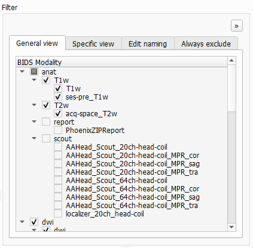
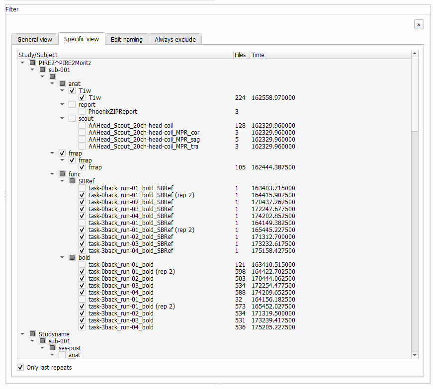
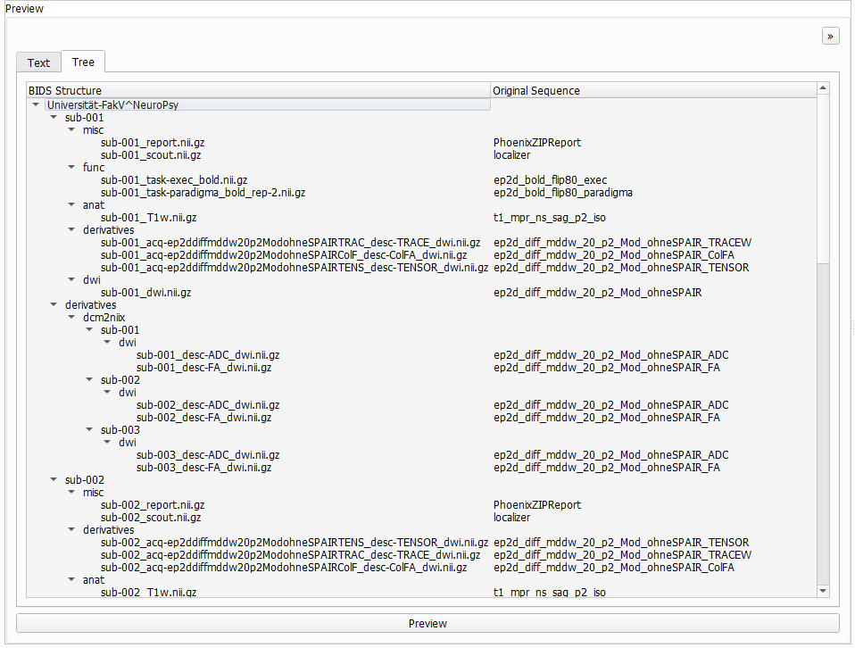
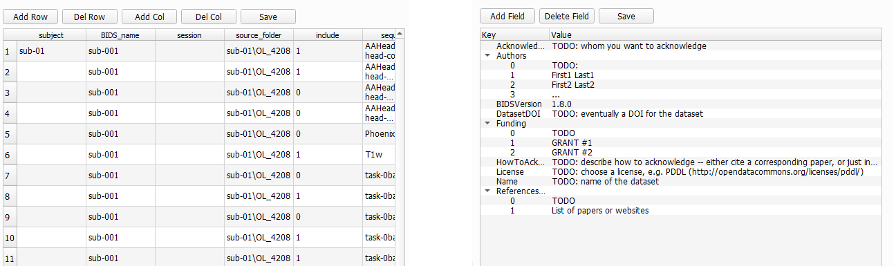
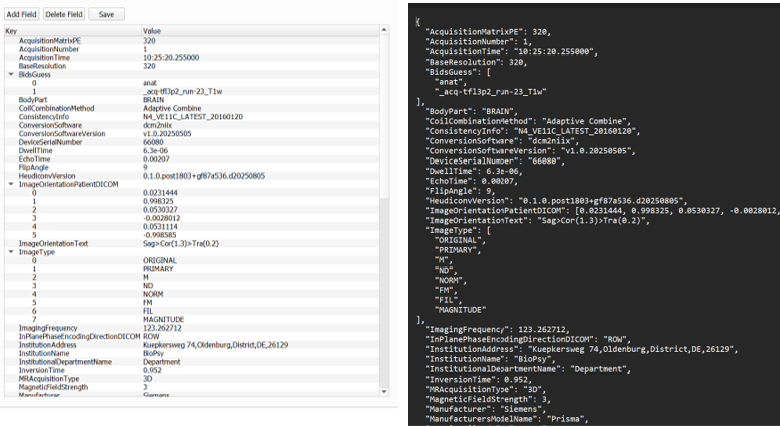
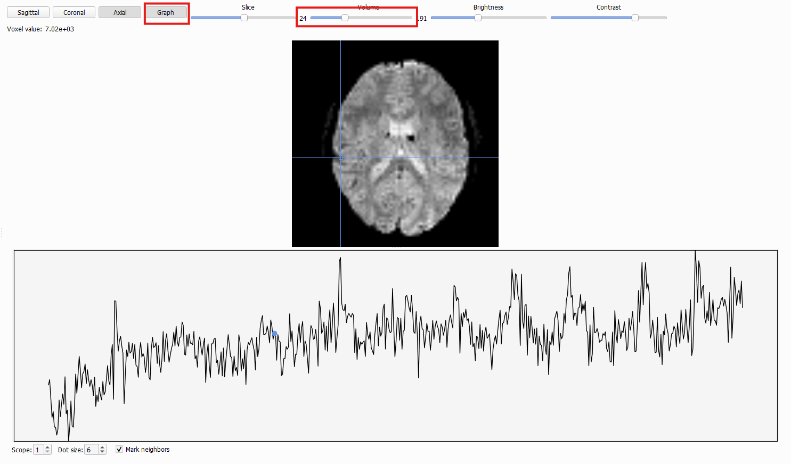

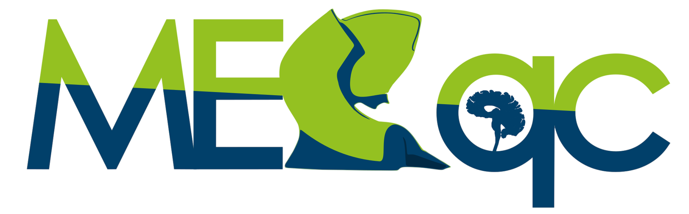
MEG/EEG quality-assessment and control software
MEEGqc is a BIDS-aligned toolbox for reproducible EEG and MEG quality assessment and quality control. It first creates a persistent quality-assessment layer: metric derivatives, interactive subject reports, group summaries, and multi-sample comparisons that describe the data without imposing pass/fail decisions. On top of that descriptive layer, explicit quality-control criteria can be applied and audited.
Quality assessment computes continuous descriptors: STD, peak-to-peak amplitude, PSD summaries, ECG/EOG correlation magnitudes, high-frequency muscle-burden profiles, stimulus/event summaries, and MEG head-motion summaries when available.
Quality control is the criterion-based layer: thresholds and configurable rules turn assessment metrics into burden indicators, flags, rankings, exclusion candidates, or other documented decisions.
MEEGqc writes interactive subject reports, machine-readable BIDS derivatives, JSON summaries, group quality reports, and multi-sample comparisons so quality evidence can be reused and audited.
Quality assessment does not decide whether data are good or bad. It preserves multiscale measurements, distributions, quantiles, temporal footprints, spatial sensor patterns, spectral profiles, and physiological-coupling summaries as reusable evidence.
Quality control starts after assessment: user-defined criteria from configuration files convert continuous measurements into traceable outcomes such as noisy/flat channel burdens, high-correlation burdens, muscle-event burdens, rankings, exclusions, or GQI attempts.
The workflow supports MEG, standalone EEG, and EEG channels embedded in MEG recordings, including BIDS channel-type correction, EEG montage handling, re-referencing, and EEG-specific muscle bands.
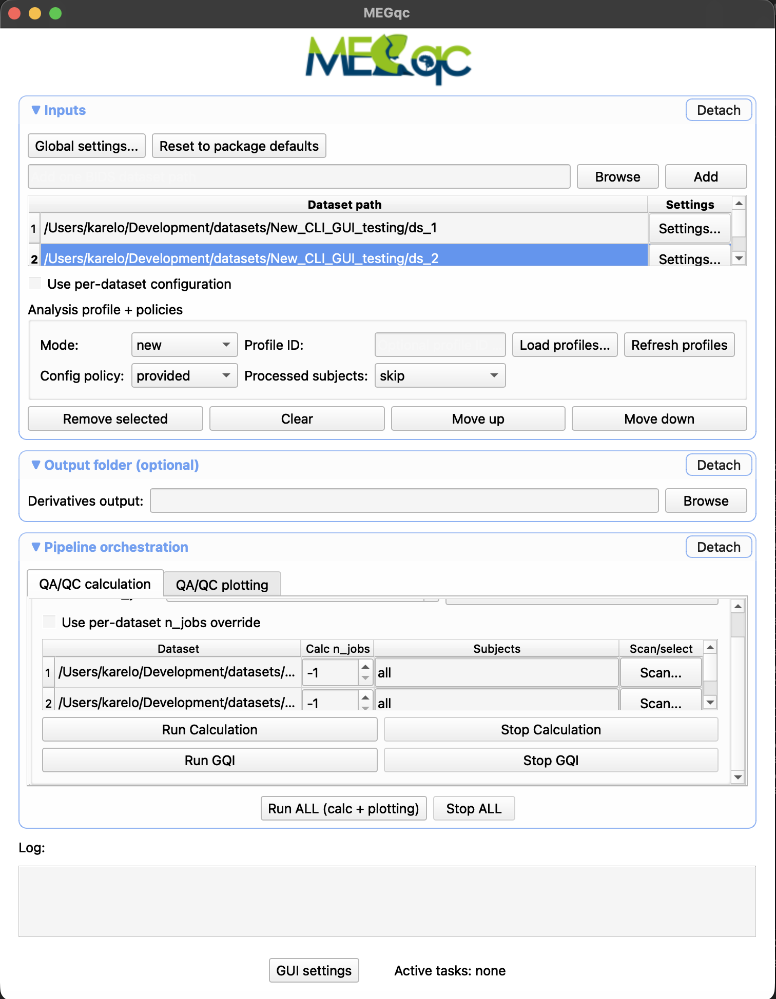
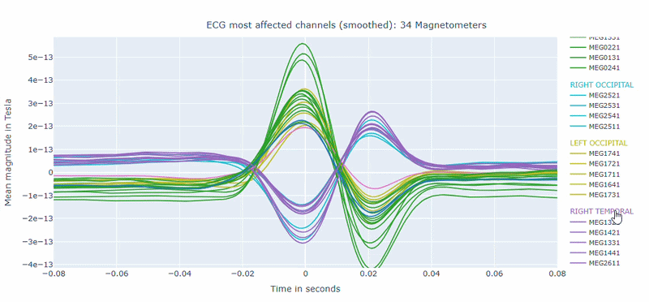

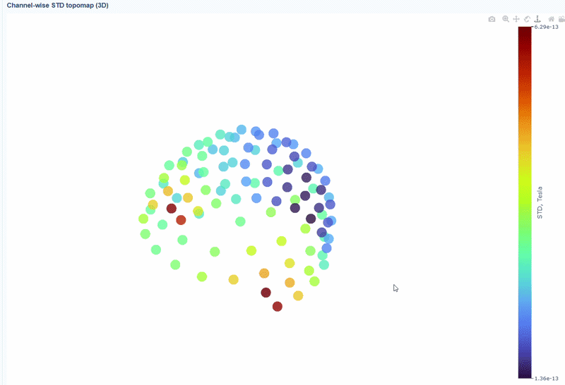
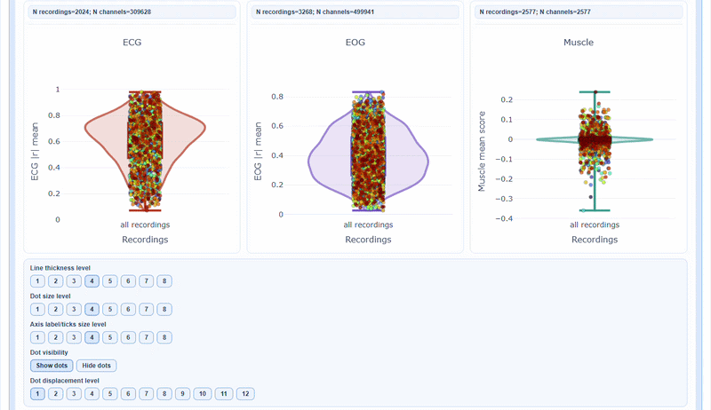
Software and documentation